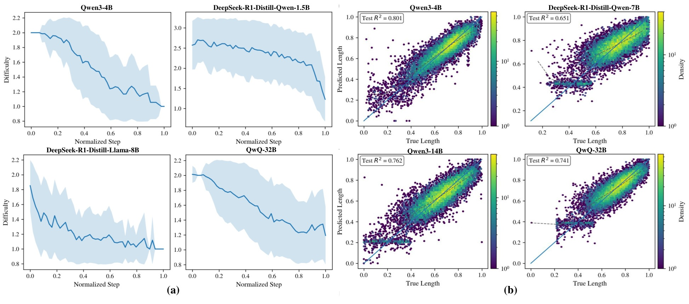
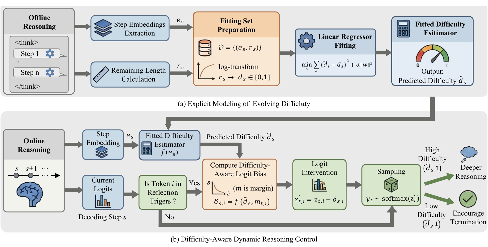
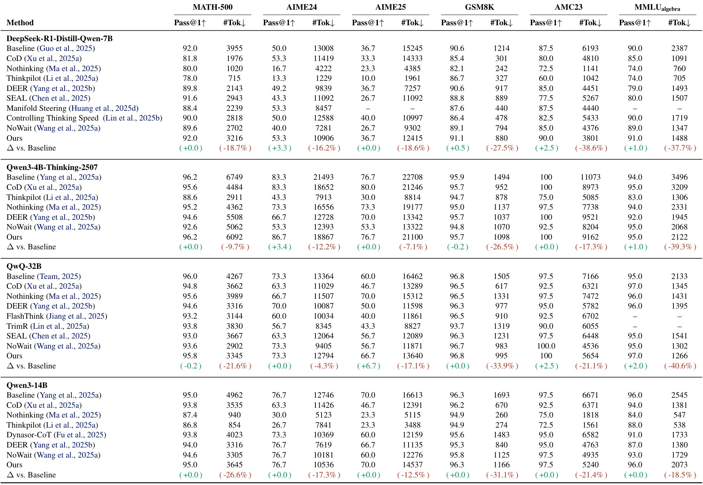
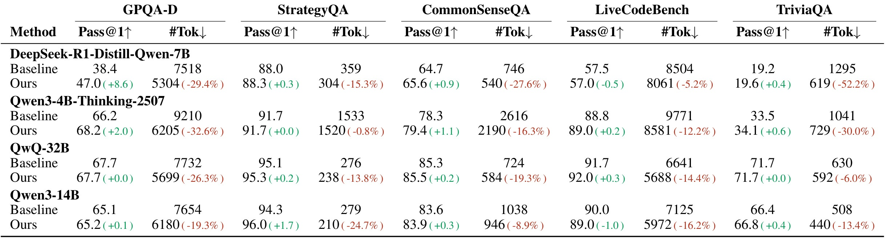
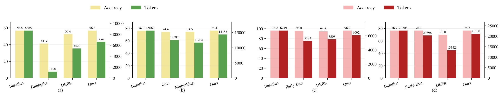
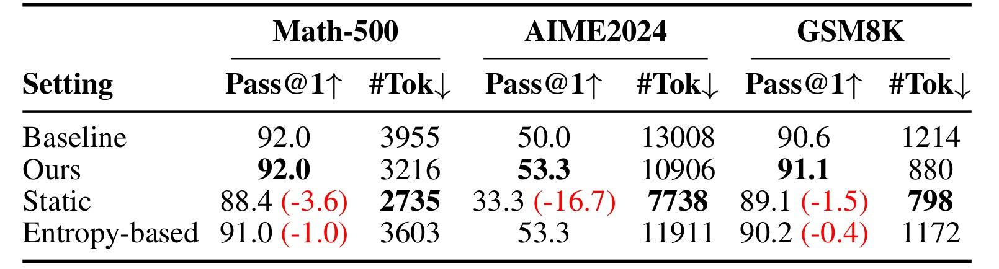
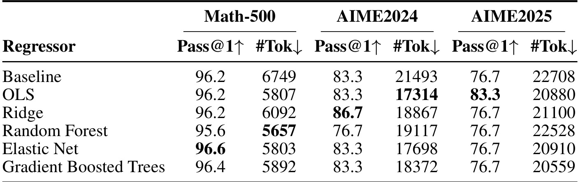
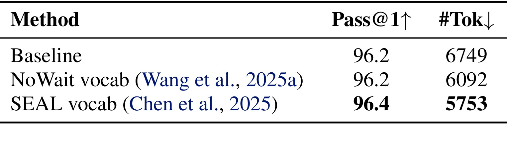

DyCon: Dynamic Reasoning Control via Evolving Difficulty Modeling
这篇论文讨论大推理模型的“过度思考”问题：模型在已经得到足够解题线索之后，仍然继续反思、验证、绕路和展开长链条，导致 token 成本增加，也可能把原本正确的路径带偏。作者把这个问题拆成一个更细的控制问题：推理过程中的难度不是静态标签，而是在每个 reasoning step 后持续变化；如果模型内部隐藏状态已经编码了这种变化，就可以用一个轻量难度估计器在推理时动态调整反思词的 logits。
论文作者包括 Tengyao Tu、Yulin Li、Huiling Zhen、Libo Qin、Zhoujun Wei、Jinghua Piao、Zhuotao Tian、Yong Li 和 Min Zhang，机构覆盖 Harbin Institute of Technology, Shenzhen、Zhongguancun Academy、Huawei Noah's Ark Lab、Shenzhen Loop Area Institute 和 Tsinghua University。论文入口：arXiv:2606.07108。PDF 摘要中给出项目与代码地址：yu-lin-li/DyCon。目录名沿用本轮 worker 分配的“清华-DyCon”，正文不把目录名当成一作机构结论。
1. 背景和问题
近一年的 reasoning model 论文有一个很明显的趋势：模型不再只是输出答案，而是通过较长的内部推理轨迹来试探、回看、纠错和验证。这个机制在难题上有价值，因为数学题、代码题和复杂问答常常需要多步拆解；但在简单题或者已经接近解答的中间状态上，继续生成长反思链会变成冗余计算。DyCon 的切入点就是这个边界：什么时候应该继续深入，什么时候应该减少反思并走向结束。
已有的高效推理方法大致有三类。第一类依赖外部模型或规则判断 reasoning sufficiency，例如用另一个判断器看答案是否足够；第二类用人工设计的置信度、entropy 或 logit 统计去决定是否停止；第三类通过 SFT 或 RL 让模型学习短推理或停止行为。这些路线都能节省一部分 token，但它们共同的问题是控制信号要么太静态，要么太依赖任务特定数据，要么容易把难题也过早压短。DyCon 对这些方法的批评不是“停止没用”，而是“停止控制缺少对当前难度变化的细粒度估计”。
论文的关键观察来自 Figure 2。作者让模型在 MATH-500 level 5 这类较难样本上，在每个 reasoning step 后自评当前难度。难度被标为 1、2、3 三档：几乎解决、还有不确定、缺少关键洞察。聚合后可以看到，若推理路径有效，平均难度会随 normalized reasoning step 下降；如果路径无效，难度可能维持高位或波动。这说明“题目难度”不能只在输入问题上打一次分，因为同一道题的当前状态会因为模型已经走过的推理路径而变化。
第二个观察更重要：step-level hidden state 里似乎已经有难度信号。作者以 remaining reasoning length 作为 proxy，把某个 step boundary 到 </think> 的剩余长度看作当前还需要多少推理。然后用 step embedding 去线性预测这个归一化后的 remaining length。Figure 2(b) 显示，在多个模型家族上，线性回归的预测曲线和实际难度走势很接近，R2 分数较高。换句话说，DyCon 并不是额外训练一个复杂控制器来猜难度，而是从模型本来就产生的隐藏表示中读出难度。
这篇论文的研究价值在于，它把 reasoning efficiency 从“少生成一些 token”改写为“按轨迹状态动态分配推理深度”。如果只追求 token 压缩，NoThinking、hard early-exit 或强 suppression 都可能获得很低的输出长度，但代价是难题准确率显著下降。DyCon 希望避免这种粗暴压缩：当 difficulty estimator 判断当前仍然困难时，保留反思；当估计难度下降时，才降低反思相关 token 的概率，让模型更自然地结束。
工程上，这个想法的吸引力有三点。第一，它 training-free，不改原始 LRM 参数，只拟合一个小的线性回归器；第二，它在线推理时只需要在 step boundary 处读取隐藏状态并做 logit bias，因此比重新训练模型轻得多；第三，它不是硬停止，而是软干预 reflection-related vocabulary，理论上更容易保留模型自发生成必要推理的能力。真正的风险也在这里：difficulty regressor 的校准是否稳定、reflection vocabulary 是否覆盖正确、logit intervention 是否会在高难样本中过度抑制，都是实验必须回答的问题。
还有一个容易被忽略的背景是，很多“省 token”方法默认把推理长度当成坏东西。DyCon 的立场更细：长度本身不是坏，错误的是在低难度或已收敛状态下继续触发反思词。这个区别对高难数学题尤其关键，因为 AIME、Olympiad 这类题需要长程推导；如果只用总长度或固定阈值裁断，模型可能在关键转折前被迫结束。DyCon 因此把当前状态的难度估计放在第一位，而不是把短输出作为直接目标。
从评测口径看，DyCon 也把“性能保持”和“计算节省”绑在一起报告。主表每个任务都同时给 Pass@1 和 #Tok，非数学表也沿用同一格式。这种呈现方式避免了只看准确率或只看压缩率的误读：一个方法如果 token 降很多但 AIME 准确率腰斩，就不是有效的 reasoning control；反过来，如果准确率保持但 token 不降，也没有解决过度思考。DyCon 的目标是在这两个维度上同时给出可解释的折中。
因此，读 DyCon 时不能只看“减少 token”这个 headline。更准确的阅读顺序应该是：先看 Figure 2 是否说明动态难度和隐藏状态线性可读；再看 Figure 3 如何把这个信号变成离线拟合与在线控制；最后逐表检查 Table 1、Table 2、Figure 4、Table 3、Table 5 和 Table 6 是否同时支撑效果、泛化、消融、词表鲁棒性与效率。下面的方法和实验章按这个顺序展开。
2. 方法
2.1 动态难度为何必须按 reasoning step 建模
DyCon 先定义推理轨迹。给定输入问题 $q$，LRM 自回归生成 token 序列 $y=(y_1,\ldots,y_T)$。论文把第 $t$ 个 token 的 pre-softmax logit 写作 $z_t\in\mathbb{R}^{|V|}$，并用 $p_\theta(y_t\mid q,y_{<t})=\mathrm{softmax}(z_t)$ 表示下一 token 分布。这个定义看似常规，但它把后续控制位置说清楚了：DyCon 不在输入端改 prompt，也不在训练端改 $\theta$，而是在推理过程中根据 step-level state 对某些 token logits 做偏置。
论文把 reasoning 部分限制在 <think> 和 </think> 之间，并用换行边界表示一个 reasoning step。设第 $s$ 个 step boundary 对应 token index 为 $t_s$，第 $\ell$ 层隐藏状态为 $h_{t_s}^{(\ell)}$，则 step embedding 定义为：
符号解释：$s$ 是 reasoning step 编号，$t_s$ 是该 step boundary 的 token 位置，$\ell$ 是模型层号，$e_s^{(\ell)}$ 是当前 step 的隐藏表示。由于 causal attention mask 只允许看到当前以前的上下文，这个隐藏状态包含了前面推理路径的信息，适合拿来估计“当前还剩多少推理”。

Figure 2 是 DyCon 的两个核心观察。左侧子图用自评难度展示 difficulty 随 reasoning progress 变化：四个模型家族的均值曲线总体下降，阴影区域表示不同样本之间的波动。它说明难度不是输入题目的静态属性，而是当前推理路径的状态属性。右侧子图把 remaining length 作为难度 proxy，用 step embedding 线性预测归一化难度；预测线和真实线贴合，说明模型内部隐藏状态中已有可线性读出的 latent difficulty knowledge。对 DyCon 来说，左图负责证明“要动态”，右图负责证明“能读出”。如果没有左图，方法会退回到静态难度估计；如果没有右图，在线控制就需要复杂训练器而不是轻量 regressor。
这个观察还解释了 DyCon 为什么不把“是否停止”当作二分类。推理路径中间的状态并不只有 stop/continue 两种情况。有些 step 难度明显下降，但仍需要完成答案格式或最后验证；有些 step 看起来已经很长，却仍处在高难推理区域。用连续难度值控制反思 token 的 probability，比直接预测停止点更细。这也是后面 Figure 4 early-exit 对比中的核心差异：hard stopping 只能决定终止或不终止，DyCon 则可以在多个 step 上渐进地降低反思倾向。
2.2 用 remaining length 拟合 difficulty regressor
DyCon 的离线阶段只构造一个小型 fitting set。作者随机采样 600 个 MATH 训练样本，让目标 LRM 生成 CoT，并在每个 step boundary 记录两个量：step embedding $e_s$ 和 remaining length $r_s$。这里的 remaining length 是从当前 step boundary 到 </think> 的剩余 token 长度。直觉上，剩余长度越大，说明模型预计还需要更多推理；剩余长度越小，说明当前状态接近完成。
原始 $r_s$ 是 heavy-tailed 的：少数轨迹会非常长，直接回归会被极端长样本支配。所以论文先做 log transform，再做 min-max normalization：
符号解释：$r_s$ 是当前 step 的剩余推理长度，$\tilde r_s$ 是压缩长尾后的长度，$\tilde r_{\min}$ 与 $\tilde r_{\max}$ 来自 fitting set，$d_s$ 是有界 difficulty target。$d_s$ 越大，表示这个 step 后面仍有较长推理；$d_s$ 越小，表示当前状态已经接近结束。
论文选择 remaining length 作为 proxy，有一个隐含假设：模型自己生成的剩余推理长度能近似反映当前状态下还需要多少认知工作。这个假设不完美，因为长输出里可能有重复验证和无效绕路；但它有两个实际优点。第一，它不需要人工逐 step 标注难度，能从现有 reasoning trace 自动构造大批 step-level 训练点。第二，它和 DyCon 的目标一致：要控制的正是后续还会生成多少反思内容，所以 remaining length 虽有噪声，却直接连接到 token efficiency。论文在附录里进一步讨论 outlier removal 和 refit，说明作者意识到这个 proxy 会受冗余长度污染，并没有把它当作纯净真值。
拟合时的 layer selection 也值得单独强调。不同层隐藏状态承载的信息不同，早层更偏局部 token 和语法，中后层更可能聚合推理语义和当前解题状态。DyCon 没有固定指定某一层，而是在公共可用层和 ridge 正则强度上做 validation grid search，以 R2 最大为准。这一步让 difficulty estimator 更像一个可校准探针：如果某个模型的难度信号出现在第 25 层，另一个模型出现在第 39 或第 62 层，方法都可以自动适配。对内部复现而言，这意味着不能直接复用论文的 best layer；必须按自己的 backbone 和 hidden-state 输出重新选层。
有了 target 后，DyCon 用线性解码器估计难度：
这个形式很克制。作者不是训练一个新 policy，也不是让模型学习新的 reasoning behavior，而是用 step embedding 解码当前难度。为了稳定高维隐藏状态的拟合，论文使用 ridge regression：
符号解释：$w$ 和 $b$ 是 regressor 参数，$\mathcal{D}$ 是 step-level fitting set，$\alpha$ 控制 $\ell_2$ 正则。论文还说明，使用哪一层隐藏状态、ridge 正则强度取多少，不靠人工拍脑袋，而是在 held-out validation split 上最大化 R2 自动选择，MAE 作为 tie-breaker。附录 Table 8 给出的 regressor summary 显示，Log1p + Min-Max 通常优于直接 Min-Max 或 Raw target；Qwen3-4B-Thinking-2507 的 best layer 是 25，R2 达到 0.802，MAE 为 0.052。这些细节说明 regressor 不是正文临时补的解释，而是 DyCon 控制策略的前置校准模块。
2.3 在线推理中的 difficulty-aware logit bias
在线阶段的输入是当前推理 step 的 hidden state。每当模型生成新的 step boundary，DyCon 取出 $e_s$，用离线拟合好的 regressor 得到 $\hat d_s$。这个值随后进入 logit intervention。论文定义 reflection-related token set $S\subset V$，包括 wait、alternatively、hmm、however、check、verify 等反思触发词。DyCon 只对 $i\in S$ 的 token 做调整：
符号解释：$z_{t,i}$ 是原始 logit，$z'_{t,i}$ 是干预后 logit，$S$ 是 reflection trigger 的 token 集合，$\delta_{s,i}$ 是当前 step 对该 token 的 suppression bias。非 reflection token 不变，所以 DyCon 的控制面很窄。
为了避免无差别打压反思词，DyCon 先计算当前 logits 的均值和 positive margin：
符号解释：$\mu_t$ 是全词表平均 logit，$m_{t,i}$ 只保留高于平均的正 margin。这样做的意思是：如果某个反思词本来就不是候选高概率 token，不需要额外压制；只有当反思词已经有较强生成倾向时，DyCon 才施加 bias。
最终 bias 由预测难度和 margin 共同决定：
符号解释：$\hat d_s$ 是当前 step 的估计难度，$\tau$ 是所有模型和任务一致使用的阈值，$m_{t,i}$ 是反思 token 的正 margin。当难度高时，$(1-\hat d_s)$ 很小，suppression 本身就弱；再用 $\sqrt{m_{t,i}}$ 让高难状态下的压制更温和，保护必要探索。当难度低时，模型已经接近完成，使用线性 margin 会更直接地降低 reflection token 概率，鼓励结束。
这里的阈值 $ au$ 不负责决定终止点，而是负责在高难状态下把 margin 变换成更温和的平方根形式。这个设计比直接乘一个固定 suppression 系数更谨慎。若 $\hat d_s$ 很高，说明 remaining-length regressor 认为当前还需要较多推理，$(1-\hat d_s)$ 已经让 bias 很小，再使用 $\sqrt{m_{t,i}}$ 可以进一步避免强行压掉本来概率很高的反思词。若 $\hat d_s$ 较低，模型接近完成，使用 $m_{t,i}$ 则让 suppression 更有效。换句话说，DyCon 的动态性不仅来自 $\hat d_s$ 这一个数，也来自它和 margin、阈值、词表过滤共同组成的非线性控制曲线。
这个 logit intervention 还有一个保护条件：只对 positive margin 生效。假设某个 reflection token 的 logit 低于全词表均值，它本来就不太可能被采样，继续扣减没有意义，还可能引入不稳定的长尾扰动。DyCon 只处理高于均值的 reflection triggers，相当于只在模型确实倾向于继续反思时才介入。这一点让方法更接近“抑制过强的反思冲动”，而不是“禁止模型说出反思词”。

Figure 3 把上述机制分成两条路径。上半部分是 offline reasoning：抽取 step embeddings，计算 remaining length，log-transform 和 normalize 后形成 fitting set，再拟合 linear regressor 作为 difficulty estimator。下半部分是 online reasoning：每个 step 取当前 embedding，预测 difficulty，判断当前 token 是否属于 reflection triggers，然后计算 difficulty-aware logit bias 并进行 logit intervention。图中最关键的是训练/推理差异：训练侧只拟合 regressor，不更新 LRM；推理侧只改变少数 reflection token 的 logits，不把模型改造成新的 early-exit classifier。这个差异决定了 DyCon 的部署门槛，也解释了它为什么能被称为 training-free。
2.4 训练侧和推理侧的差异与工程接口
DyCon 的训练侧更准确地说是“拟合侧”。它依赖一个 seen dataset 生成 step-level fitting set，目标是让 ridge regressor 学会从 hidden state 读出 remaining-length difficulty。这个阶段需要访问模型隐藏状态和完整 reasoning trace，因此适合离线完成。拟合完成后，$w,b$ 和选择好的 layer 就固定下来。论文主实验中，每个 backbone 都在 MATH 上拟合 regressor，然后把同一个 regressor 用到数学、非数学、代码、知识问答等评测上。
推理侧则只做在线估计和 logit 控制。它不需要知道最终答案是否正确，不需要未来 token，也不需要重新训练模型。每遇到 step boundary，就取一次 hidden state，算 $\hat d_s$，再对 reflection vocabulary 做软 suppression。这个设计有一个清晰的工程接口：服务端必须能够识别 reasoning step boundary，读取指定层 hidden state，访问当前 logits，并允许在采样前对少数 token logits 做 bias。如果某个部署框架只能拿到最终文本而不能拿 logits 或 hidden state，DyCon 的原版机制就不能直接落地。
与 early-exit 相比，DyCon 的控制粒度更细。early-exit 需要决定“此刻结束吗”，一旦判断错误，难题会被截断；DyCon 只是降低继续反思的概率，模型仍可在高难状态下继续生成必要步骤。与 prompt-based NoThinking 相比，DyCon 不靠固定提示词强推短答，而是按当前轨迹估计难度。与训练式短推理方法相比，DyCon 避免了 curated dataset、RL reward 和 mode collapse 的风险，但也把成败压到了 regressor 校准和 vocabulary 选择上。
论文还在附录补充了两个校准点。其一，regressor 的目标从 remaining length 来，remaining length 本身可能受冗余轨迹影响；作者在附录里分析 removing length-based outlier trajectories 和 iterative fit-refine-refit，发现过度清理或过度 refit 不一定提升下游效果。其二，reflection vocabulary 不是任意词表，附录列出了 NoWait 风格的 token phrases，并且正文 Table 6 检查不同反思词表。也就是说，DyCon 的方法不是“看到低难度就少说话”这么粗，而是通过隐藏状态、难度估计、词表过滤和 margin-based bias 四个环节共同限制干预范围。
如果把 DyCon 接到真实推理服务，还需要考虑 step boundary 的定义。论文沿用换行边界作为 reasoning step，这对许多 CoT 模型有效，但不同模型可能使用不同的分隔习惯。有的模型会用段落、枚举或特殊 token 表达思考阶段；有的模型在代码任务中可能频繁换行，但语义上并不是新的 reasoning step。复现时应先检查 boundary 是否稳定，否则 $e_s$ 会混入格式噪声，remaining length target 也会变得不一致。
另一个实现细节是采样策略。DyCon 改的是 logits，因此温度、top-p、top-k 和 repetition penalty 都会影响最终效果。如果采样本来非常确定，reflection-token bias 的边际作用可能较小；如果采样很发散，轻微 bias 也可能改变轨迹。论文主表在多个 backbone 上报告结果，但内部落地时仍应固定采样参数做 A/B，对比同一 prompt、同一 seed 或足够多 repeated trials 下的 Pass@1 和 token。只有这样才能判断收益来自 difficulty-aware control，而不是来自采样噪声。
对复现者而言，最容易踩坑的是把 $\hat d_s$ 当成题目难度。它其实是当前轨迹状态的难度估计，受到前面推理质量影响。同一道题在不同生成路径上可能给出不同难度曲线。另一个风险是把 suppression vocabulary 当作可随便替换的工程列表。Table 6 显示 NoWait vocab、SEAL vocab 都能工作，但这并不表示任何中文或多语言反思词表都安全；如果词表漏掉关键反思触发词，节省 token 的效果会下降；如果词表包含普通内容词，可能误伤答案生成。
3. 实验结果
实验部分要回答三个问题：DyCon 是否真能在不牺牲准确率的情况下降低 token；这种效果是否跨模型、跨任务泛化；核心模块是否必要。论文主实验覆盖四个 reasoning backbone：DeepSeek-R1-Distill-Qwen-7B、Qwen3-4B-Thinking-2507、QwQ-32B 和 Qwen3-14B。数学任务包括 MATH-500、AIME2024、AIME2025、GSM8K、AMC23 和 MMLUalgebra；非数学任务包括 GPQA-D、StrategyQA、CommonSenseQA、LiveCodeBench 和 TriviaQA。每个 backbone 的 regressor 都离线用 600 个 MATH 样本拟合，并固定用于所有评测。

Table 1 是主结果。DeepSeek-R1-Distill-Qwen-7B 上，DyCon 在 MATH-500 保持 92.0 Pass@1，token 从 3955 降到 3216；AIME2024 从 50.0 提到 53.3，token 从 13008 降到 10906；GSM8K 从 90.6 到 91.1，token 从 1214 降到 880；AMC23 从 87.5 到 90.0，token 从 6193 降到 3801。Qwen3-4B-Thinking-2507 上，MATH-500 维持 96.2，AIME2024 从 83.3 到 86.7，MMLUalgebra 从 94.0 到 95.0，同时 token 分别有不同幅度下降。QwQ-32B 上，AIME2025 从 60.0 到 66.7，MMLUalgebra 从 95.0 到 97.0；Qwen3-14B 上，多数准确率维持 baseline，token 减少从 12.5% 到 31.1% 不等。这个表的核心不是每一格都胜出，而是 DyCon 相比 NoThinking、ThinkPilot 这类强压缩方法，在难题上没有明显准确率崩塌。
从 Table 1 也能看到 DyCon 的边界。Qwen3-4B 的 GSM8K 从 95.9 到 95.7，QwQ-32B 的 MATH-500 从 96.0 到 95.8，说明软控制不是零损失；它是在 accuracy 和 token 之间做相对温和的重新分配。真正值得关注的是对高难任务的保护：NoThinking 和 ThinkPilot 在 AIME、AMC 等任务上经常把准确率压低很多，而 DyCon 更像是保留高难反思、削减低难冗余。这个表也说明效率不能只看 token 降幅，因为越激进的方法越容易牺牲难题能力。

Table 2 检查非数学泛化。DeepSeek-R1-Distill-Qwen-7B 在 GPQA-D 上从 38.4 提到 47.0，token 降 29.4%；StrategyQA 从 88.0 到 88.3，token 降 15.3%；CommonSenseQA 从 64.7 到 65.6，token 降 27.6%；TriviaQA token 从 1295 降到 619。Qwen3-4B 在 GPQA-D、CommonSenseQA、TriviaQA 上小幅提分并减少 token，LiveCodeBench 从 88.8 到 89.0，token 降 12.2%。QwQ-32B 和 Qwen3-14B 也大多保持或小幅提高准确率，同时减少输出长度。这个表支撑了作者的主张：用 MATH 拟合的难度轨迹信号并不完全是数学专用，在科学问答、常识、代码和知识问答中也能迁移。
不过 Table 2 也提示一个校准问题。LiveCodeBench 上 DeepSeek-R1-Distill-Qwen-7B 从 57.5 到 57.0，Qwen3-14B 从 90.0 到 89.0，出现轻微下降。说明跨域泛化不是无条件成立。论文附录 Table 10 和 Table 11 进一步解释了这一点：MATH-fitted regressor 在 CommonsenseQA 和 GPQA 上较合理，但在 MultiChallenge 这种交互结构差异更大的任务上校准变差；如果用 MATH、CommonsenseQA、GPQA 和 MultiChallenge 的均衡混合数据 refit，跨域估计会更接近 ground truth。对工程落地来说，这意味着“training-free”不等于“无需域校准”，而是可以用很小成本做轻量拟合。

Figure 4 分两部分。左侧 (a)(b) 是 Olympiad benchmark：R1-Qwen-7B 上，DyCon 相比 baseline 保持更好准确率/token 权衡；Qwen3-4B 上，DyCon 在 76.7 accuracy 附近减少 token，而 NoThinking、DEER 或其他方法要么更耗 token，要么准确率不如 DyCon。右侧 (c)(d) 是 early-exit 评估：在 Math-500 和 AIME2025 上，difficulty-aware early-exit 可以优于普通 early-exit 或 DEER，但仍不如 DyCon 的软 logit 控制稳定。这个图直接回答“为什么不用 early-exit”这个问题：离散停止点太粗，容易在需要继续反思的样本上提前截断；DyCon 通过连续 bias 调整反思倾向，因此更容易保持高难题能力。
Figure 4 还补上了 Table 1 里不容易看出的叙事：DyCon 的优势不是一味压缩，而是避免把所有样本都推向短输出。Olympiad 样本通常需要长程探索，如果控制策略只看“生成已经很长”，就会误判；DyCon 通过 hidden-state difficulty 判断当前是否仍然困难，在高难状态下 suppression 较弱。early-exit 子图则说明，即便把 difficulty awareness 加进提前退出机制，hard stopping 仍然受限于决策粒度。这个实验是方法机制和工程直觉之间最紧的一处连接。

Table 3 做 difficulty awareness 消融。R1-Qwen-7B 上，baseline 在 Math-500、AIME2024、GSM8K 分别是 92.0/3955、50.0/13008、90.6/1214；DyCon 是 92.0/3216、53.3/10906、91.1/880。Static 设置把动态难度替换成固定系数，Math-500 降到 88.4，AIME2024 降到 33.3，虽然 token 更少但明显误伤高难推理。Entropy-based 在 AIME2024 保持 53.3，但 Math-500 和 GSM8K 有下降，token 节省也不如 DyCon 均衡。这个表验证了本文方法的核心：难度估计必须随 step 和样本变化，静态压制会把困难样本当成简单样本处理。
从消融角度看，Table 3 比主结果更能说明 DyCon 的因果链。若 Ours 只是靠压低 reflection token 获得 token 减少，那么 Static 应该也能达到类似效果；但 Static 的准确率掉得很厉害，说明“压低反思词”本身不是充分条件。若 entropy-based 局部不确定性足够，trajectory-level hidden representation 就没有必要；但 entropy-based 的表现不稳定，说明局部 token uncertainty 不能完整代表当前 reasoning trajectory 的剩余难度。DyCon 的 regressor 利用的是整段前缀编码在 step embedding 里的状态，因此更适合控制持续推理。

Table 5 比较 regressor 类型。Qwen3-4B 上，OLS 在 Math-500 保持 96.2，token 5807；AIME2024 保持 83.3，token 17314；AIME2025 提到 83.3，token 20880。Ridge 在 AIME2024 提到 86.7，但 AIME2025 回到 76.7；Elastic Net 在 Math-500 提到 96.6，token 5803；Gradient Boosted Trees 也能保持较好结果。Random Forest 虽然 token 更少，但 Math-500 降到 95.6，AIME2024 降到 76.7。论文正文解释 Random Forest 的预测质量较差，R2 为 0.6398，而其他 regressor 约 0.8，因此下游控制也变差。
这个表有两个含义。第一，DyCon 不依赖某一个具体线性模型；OLS、Ridge、Elastic Net 都能工作，说明隐藏状态里的难度信号比较直接。第二，regressor 并不是越复杂越好。Random Forest 这类非线性模型可能在小样本、高维 hidden state 下产生不稳定边界，导致 difficulty estimate 失准；一旦 $\hat d_s$ 不准，logit bias 就会在错误 step 上过强或过弱。附录 Table 34 也进一步比较了 OLS 和两层 MLP，结论同样偏向轻量、稳定的 regressor。对复现者来说，先把 layer selection、normalization 和 validation R2 做稳，比盲目换复杂模型更重要。

Table 6 检查 suppression vocabulary。Qwen3-4B 的 baseline 在 Math-500 是 96.2/6749；使用 NoWait vocab 后是 96.2/6092；使用 SEAL vocab 后是 96.4/5753。这个结果说明 DyCon 对 reflection token list 不是极端脆弱：只要词表确实覆盖“继续反思、重新检查、换路探索”这类触发词，方法就能减少 token，并且不明显损害准确率。它也说明 vocabulary design 不应被忽略，因为 DyCon 的控制对象不是所有 token，而是一个人工/规则定义的反思词子集。
效率证据需要和这些表一起读。主文用 Pass@1 与 #Tok 同时报告，Table 1 和 Table 2 已经给出大量 token 减少：例如 QwQ-32B 在 GSM8K 上 token 从 1505 到 995，MMLUalgebra 从 2133 到 1266；Qwen3-14B 在 Math-500 从 4962 到 3645，GSM8K 从 1693 到 1166。附录 Table 24 还用 MMLU 报告 time per request 和 throughput，说明 DyCon 不只减少文本长度，也接近 prompt-based baseline 的吞吐水平。由于本次 worker 修复范围聚焦主文和指定消融，我没有把附录 Table 24 裁进正文图片，但在 paper_audit.json 中保留了该表，后续如果要扩写系统效率章，应优先补裁它。
综合实验看，DyCon 的证据链是完整的：Table 1 证明数学主结果；Table 2 证明非数学泛化；Figure 4 证明 Olympiad 和 early-exit 对比；Table 3 证明动态 difficulty awareness 必要；Table 5 证明 regressor 选择会影响控制质量但轻量模型足够；Table 6 证明 reflection vocabulary 有鲁棒性。仍需保留的风险是，所有数字来自论文表格转述，本轮没有独立复算 benchmark，也没有运行作者代码验证 repeated sampling 的方差。因此这些结果适合作为论文精读和复现计划的依据，不应直接等同于线上服务收益。
4. 总结
DyCon 的核心贡献可以概括为一句话：把 reasoning model 的推理长度控制，从静态停止规则改成基于 step-level hidden state 的动态难度估计。它先证明难度会沿推理过程变化，再证明 step embedding 里存在近似线性可读的 remaining-length difficulty signal，最后用这个信号对 reflection-related token 做软 logit bias。这个设计使它不同于 NoThinking 这类强行短答方法，也不同于 hard early-exit 这类离散停止策略。
我认为这篇论文最值得借鉴的是接口设计，而不是某个具体数字。它要求系统暴露 step boundary、hidden state、current logits 和 reflection vocabulary，并把“是否继续深入”拆成连续控制强度。只要这些接口能接入日志，后续就可以按样本难度、轨迹阶段、任务类型和 token 节省幅度做分桶审计。相比只报告平均 token 减少，这种中间量更适合长期排障。
局限至少有四点。第一，difficulty target 来自 remaining length，而 remaining length 本身可能包含冗余推理，因此 target 不是纯粹的“真实难度”。第二，MATH 拟合的 regressor 虽然能迁移到多个非数学 benchmark，但对交互结构差异大的任务仍可能校准不足，需要多域 refit。第三，reflection vocabulary 是人为定义的控制面，多语言、代码或特定领域中的反思触发词可能需要重新设计。第四，logit intervention 依赖服务框架能读取 hidden states 和修改 logits，很多黑盒 API 或高吞吐推理服务未必直接支持。
后续复现建议分三步。先复现 regressor：用 600 个 MATH 样本抽取 step embedding，确认 Log1p + Min-Max target、best layer 和 validation R2 是否接近论文。再复现控制：只在小规模 Math-500/GSM8K 上接入 reflection-token logit bias，检查 token 降幅是否来自低难样本而不是难题截断。最后扩展泛化：在 GPQA、LiveCodeBench 或内部长推理任务上做分桶，重点看高难样本准确率、低难样本 token 减少和 regressor 校准误差。若这三步任何一步不稳定，应该先修观测和校准，而不是直接扩大流量。